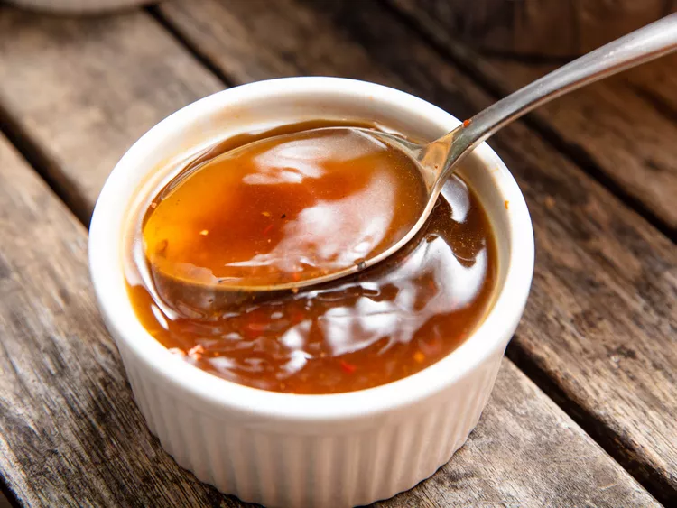

Eastern North Carolina Vinegar Sauce

Description
The only sauce there is.
Ingredients
- 2 cups (480ml) apple cider vinegar
- 2 tablespoons (15g) coarsely ground black pepper
- 1 1/2 tablespoons (20g) packed dark or light brown sugar
- 2 teaspoons (8g) Diamond Crystal kosher salt
- 2 teaspoons (10ml) hot sauce, such as Texas Pete
- 1 teaspoon red pepper flakes
- 1 tablespoon (15ml) ketchup (optional)
Steps
- In a small bowl or squeeze bottle, combine vinegar, pepper, sugar, salt, hot sauce, red pepper flakes, and ketchup (if using). Stir or shake well until sugar and salt are dissolved. Taste and adjust seasonings as desired. Dilute with a small amount of water, if desired. Use immediately as needed, or store at room temperature for up to 2 weeks.